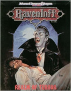

Univers de D&D
Tapouweb situe tous ses scénarios dans un univers basé sur Laelith et les Royaumes Oubliés. Mais depuis la création de D&D, de nombreux autres univers ont été publiés. Voici une présentation des principaux settings historiques, par ordre alphabétique.
Birthright
Publié sous forme de boîte, ce setting présente le continent de Cerilia, autrefois peuplé d'elfes, de nains et d'humanoïdes maléfiques. Puis les humains arrivent et se mettent à convoiter ces terres. Les elfes résistent, les nains laissent faire, les gnomes sont des créatures, pas des PJ. Et lorsque le dieu maléfique Azrai s'en mêle directement, cela permet aux elfes de se rendre compte qu'ils ont été manipulés. Mais ce setting a surtout la particularité de proposer aux joueurs d'incarner des dirigeants, des nobles ou des rois, et met en avant les questions politiques et diplomatiques. Il propose pour cela des règles de gestion de domaine proches d'un jeu de société.
Éditions : AD&D 2 (1995, VO uniquement)
Fansite officiel : Birthright.net
Dark Sun
La planète Athas, autrefois fertile, est maintenant mourante. L'eau y est rare et la terre est recouverte de déserts remplis de monstres et de pillards. Les seuls signes de civilisation sont quelques cités-états dirigées par des rois-sorciers maléfiques et extrêmement puissants. L'esclavage y est la norme, les métaux sont rares, la magie des magiciens détruit la vie aux alentours, les pouvoirs psioniques sont courants, et les dieux n'existent pas (clercs et druides tirent leurs pouvoirs des plans élémentaires). Notez que la version D&D 4 n'est pas une suite mais plutôt une réécriture qui ignore de nombreux événements décrits dans les suppléments et les romans des années 90.
Éditions : AD&D 2 (1991, VF disponible), D&D 4 (2010, VO uniquement)
Fansite officiel : The Burnt World of Athas
Dragonlance
Dragonlance propose une ambiance épique très marquée par les alignements (bien, mal et neutralité) avec des armées s'affrontant sur le monde de Krynn, dominé par les dragons, avec ses kenders, ses minotaures et ses draconiens. La saga commence par la publication de 14 modules qui se déroulent durant la guerre de la Lance et où l'on joue des héros prétirés comme Tanis, Sturm, Caramon, Raistlin, Flint Fireforge, Tasslehoff et Goldmoon. En 1987 sort Dragonlance Adventures, le premier vrai setting de Dragonlance pour concevoir ses propres aventures dans cet univers. AD&D 2 republie maladroitement les modules d'AD&D, alors que le Dragonlance Campaign Setting de D&D 3 est un vrai nouveau livre qui fait avancer la timeline.
Éditions : AD&D (1984, VF partielle), AD&D 2 (1990, VO uniquement), D&D 3 (2003, VF disponible)
Fansite non officiel : Nexus
Greyhawk
Créé par Gary Gygax et sorti en 1980 sur 32 pages, Greyhawk est le plus vieux setting de D&D. En 1983, la boite World of Greyhawk décrit l'univers avec bien plus de détails. La planète Taerre [Oerth] est similaire à notre Terre et l'immense majorité des aventures sorties se passent dans sa partie est, la Flannesse [Flanaess], que l'on peut comparer à l'Europe. L'ambiance y est un peu plus sombre que celle des Royaumes Oubliés et rappelle plus le Moyen Âge réel. La plupart des modules légendaires d'AD&D des années 80 s'y déroulent. En 1992 sort From the Ashes pour AD&D 2, qui fait avancer la timeline et bouleverse la politique. Living Greyhawk Gazetteer adapte ensuite cet univers aux règles de D&D 3.
Éditions : AD&D (1980, VO uniquement), AD&D 2 (1992, VO uniquement), D&D 3 (2000, VF disponible)
Mystara
Mystara et son Monde Connu est l'univers utilisé dans les premiers scénarios de D&D Basic (boite rouge) et D&D Expert (boite bleue), dont le célèbre Keep on the Borderlands. Il est divisé en trois continents principaux (Brun, Skothar et Davania) et a été décrit en détails dans plusieurs Gazeeter acclamés par le public. On y retrouve des royaumes et des émirats, une nation naine, un royaume elfique, des terres halfelines, un empire dirigé par des magiciens et une région au sud frappée par la peste rouge à l'atmosphère cape et épée plus Renaissance avec armes à feu que Moyen Âge.
Éditions : D&D (1987, VF partielle)
Fansite officiel : Vaults of Pandius
Planescape
Planescape, qui reprend la cosmologie de la Grande roue, est composé de plusieurs plans d'existence reliés entre eux par des portails inter-dimensionnels. Mais la particularité de cet univers est qu'il englobe tous les autres univers. Son plan primaire comporte en effet des sphères de cristal qui correspondent à chacun des settings classiques de D&D (Krynn, Toril, Athas, etc). La célèbre cité de Sigil, la cité des Portes dans la neutre Outreterre, qui concentre de très nombreux portails et factions, est une plaque tournante du commerce entre tous les plans. Elle est inaccessible aux divinités.
Éditions : AD&D 2 (1994, VF disponible)
Fansite officiel : Planewalker (down ?)
Ravenloft
À l'origine simple scénario de Greyhawk (module I6), le succès fut tel que TSR décida d'en faire un setting. C'est une ambiance dark fantasy d'horreur gothique avec des vampires, comme le célèbre baron Strahd von Zarovitch, dans un demi-plan, donc un espace plus réduit que les autres univers. Les brumes qui le recouvrent retiennent prisonniers ses habitants. Il y aura 3 versions rien que pour AD&D 2. Pour D&D 3, la licence est passée au studio Sword & Sorcery de 2001 à 2005. Notez que Curse of Strahd est la version D&D 5 du module I6, pas du setting.
Éditions : AD&D 2 (1990 Ravenloft: Realm of Terror, VF disponible ; 1994 Ravenloft Campaign Setting, VO uniquement ; 1997 Domains of Dread, VO uniquement), D&D 3 (2001, VF disponible)
Fansite officiel : Secrets of the Kargatane
Spelljammer
Le Spelljammer est un vaisseau qui ressemble à une raie manta géante. Il donne son nom à cet univers de space fantasy qui propose des voyages interplanétaires avec des moyens et une atmosphère med-fan plutôt que scientifiques. Pas de navettes spatiales donc, mais des bateaux, des oiseaux ou des poissons qui flottent dans l'espace. Spelljammer permet également, comme Planescape, de passer d'un univers de D&D à un autre, d'une sphère de cristal à une autre. Les illithids y sont une des races majeures et l'aventure Waterdeep: Dungeon of the Mad Mage pour D&D 5 y fait référence au 19ème niveau de son donjon.
Éditions : AD&D 2 (1989, VO uniquement)
Fansite officiel : Beyond the Moons
Les fansites officiels sont des sites de fans officiellement autorités par Wizards of the Coast pour faire vivre certains settings que l'éditeur avait choisi de ne plus soutenir à l'époque de D&D 3.